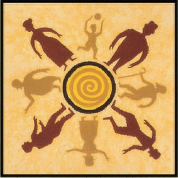
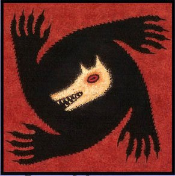
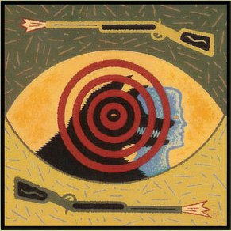

|

Dân Làng
Chức năng: Suy luận đoán ra ai là Sói để treo cổ vào buổi sáng.
Mô tả: Dân làng cùng với những người có chức năng tìm cách lập luận và suy đoán ra đâu là Sói đang ẩn mình dưới lớp người.
Lưu ý: Có nhiều thời gian và có nhiều cơ hội suy đoán hơn tất cả.
Lời khuyên: Đừng để vai trò dân làng của bạn trở nên vô ích. Bạn có thể treo cổ Sói.
|

Ma Sói
Chức năng: Giết dân làng.
Mô tả: Mỗi đêm, quản trò gọi Ma Sói dậy và Ma Sói sẽ chọn 1 dân làng để giết.
Lưu ý: Ma Sói có thể chọn không cắn. Ma Sói có thể tự cắn nhau (tự sát).
Lời khuyên: Sói nên có sự phối hợp với nhau thật tốt, cố gắng tìm ra người cần thiết để cắn trong đêm.
|

Thợ Săn
Chức năng: Khi chết sẽ được chọn một người chết theo mình.
Mô tả: Trong đêm Thợ Săn sẽ chọn một người, nếu Thợ Săn chết trong đêm thì người bị Thợ Săn chọn sẽ chết chung với Thợ Săn. ( Nếu người bị Thợ Săn chọn chết trong đêm thì Thợ Săn không chết theo ). Ban ngày Thợ Săn bị treo cổ chết thì sẽ chọn một người chết theo mình.
Lưu ý: Thợ Săn bắn ai thì người đó chắc chắn phải chết.
Lời khuyên: Chăm chú tìm ra Sói để bắn. Ra mặt khi cần thiết để đe dọa Sói.
|
 Tiên Tri
Chức năng: Tìm ma sói.
Mô tả: Mỗi đêm, quản trò gọi Nhà tiên tri dậy. Nhà tiên tri sẽ chọn 1 người chơi để đoán, nếu đó là Sói, quản trò sẽ giơ ngón tay cái lên, ngược lại, nếu không phải thì quản trò sẽ lắc tay.
Lời khuyên: Cố gắng quan sát để tìm ra sói trong đêm, ban ngày cố gắng thuyết phục mọi người và ra mặt đúng lúc.
Tiên Tri
Chức năng: Tìm ma sói.
Mô tả: Mỗi đêm, quản trò gọi Nhà tiên tri dậy. Nhà tiên tri sẽ chọn 1 người chơi để đoán, nếu đó là Sói, quản trò sẽ giơ ngón tay cái lên, ngược lại, nếu không phải thì quản trò sẽ lắc tay.
Lời khuyên: Cố gắng quan sát để tìm ra sói trong đêm, ban ngày cố gắng thuyết phục mọi người và ra mặt đúng lúc.
|
 Bảo Vệ
Chức năng: Cứu dân làng.
Mô tả: Mỗi đêm, quản trò sẽ gọi bảo vệ dậy. Bảo vệ sẽ chọn một người bất kì mà anh ta nghĩ là bị Sói cắn để bảo vệ. Nếu người anh ta bảo vệ mà bị Sói cắn, sẽ không bị chết vào sáng hôm sau.
Lưu ý: Bảo vệ có quyền tự cứu mình. Bảo vệ không được cứu 1 người 2 lượt liên tiếp.
Lời khuyên: Cố gắng quan sát để cứu được người bị hại và ra mặt đúng lúc.
Bảo Vệ
Chức năng: Cứu dân làng.
Mô tả: Mỗi đêm, quản trò sẽ gọi bảo vệ dậy. Bảo vệ sẽ chọn một người bất kì mà anh ta nghĩ là bị Sói cắn để bảo vệ. Nếu người anh ta bảo vệ mà bị Sói cắn, sẽ không bị chết vào sáng hôm sau.
Lưu ý: Bảo vệ có quyền tự cứu mình. Bảo vệ không được cứu 1 người 2 lượt liên tiếp.
Lời khuyên: Cố gắng quan sát để cứu được người bị hại và ra mặt đúng lúc.
|
Phù Thủy
Chức năng: Có 1 bình cứu người và 1 bình giết người.
Mô tả: Mỗi đêm, quản trò sẽ gọi phù thủy dậy. Phù thủy có quyền thực hiện hay không thực hiện chức năng của mình. Chức năng đó là chọn 1 người bị Sói cắn để cứu sống và giết chết 1 người mà phù thủy nghi là Sói.
Lưu ý: Được quản trò chỉ ra người bị Sói cắn để cứu. Có quyền xài 1 hoặc cả 2 bình. Bình xài rồi sẽ mất tác dụng.
Lời khuyên: Có quyền năng trong tay nên cần sử dụng khôn ngoan nhất có thể.
|
Già Làng
Chức năng: Có 2 mạng, khi bị sói cắn lần đầu không chết và khi bị cắn sẽ được quản trò thông báo cho già làng biết. Khi già làng chết các chức năng: tiên tri, bảo vệ, pháp sư câm sẽ mất.
Mô tả: Đóng vai trò quan trọng ở phe dân làng.
|
Thần Tình Yêu
Chức năng: Ghép đôi 2 nhân vật ngẫu nhiên lại với nhau. Nếu 1 người + 1 sói sẽ trở thành phe thứ 3.
Mô tả: Quản trò sẽ gọi Thần Tình Yêu dậy vào đêm đầu tiên. Thần Tình Yêu sẽ chọn 2 người trong làng bất kỳ yêu nhau. Khi 1 trong 2 bị chết với bất kỳ lý do nào, cả 2 phải cùng chết! Hai người ghép đôi sẽ được quản trò chạm nhẹ để 2 người mở mắt và biết nhân vật của nhau.
Lưu ý: Thần Tình Yêu có thể tự ghép chính mình.
|
Thổi Sáo
Chức năng: Mỗi đêm thổi sáo được gọi dậy thôi miên hai người (trừ bản thân) và được quyền thôi miên lại những người đã được thôi miên trước đó. Thổi sáo dành được chiến thắng khi thôi miên được tất cả những người còn sống trên bàn chơi.
Mô tả: Là phe thứ ba có cách thằng của riêng mình.
Lưu ý: Những người thôi miên được biết mặt nhau mỗi đêm nhưng trong buổi sáng không được quyền nhận là mình đã bị thôi miên, nếu người nào nhân là mình đã bị thôi miên người đó sẽ chết.
|
Bán Sói
Chức năng: là một dân làng bình thuờng nhưng nếu bị sói cắn sẽ không chết mà sẽ trở thành sói trong những đêm sau.
Mô tả: Là một người dân, nhưng theo phe sói.
Lưu ý: Mỗi đêm quản trò sẽ gọi Bán sói dậy nếu quản trò gật đầu thì đêm sau sẽ thức dậy cùng với sói.
|
|
|
|